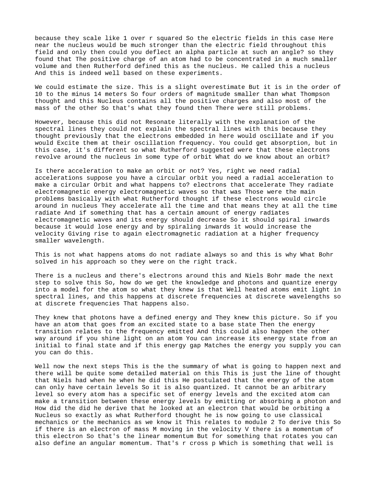
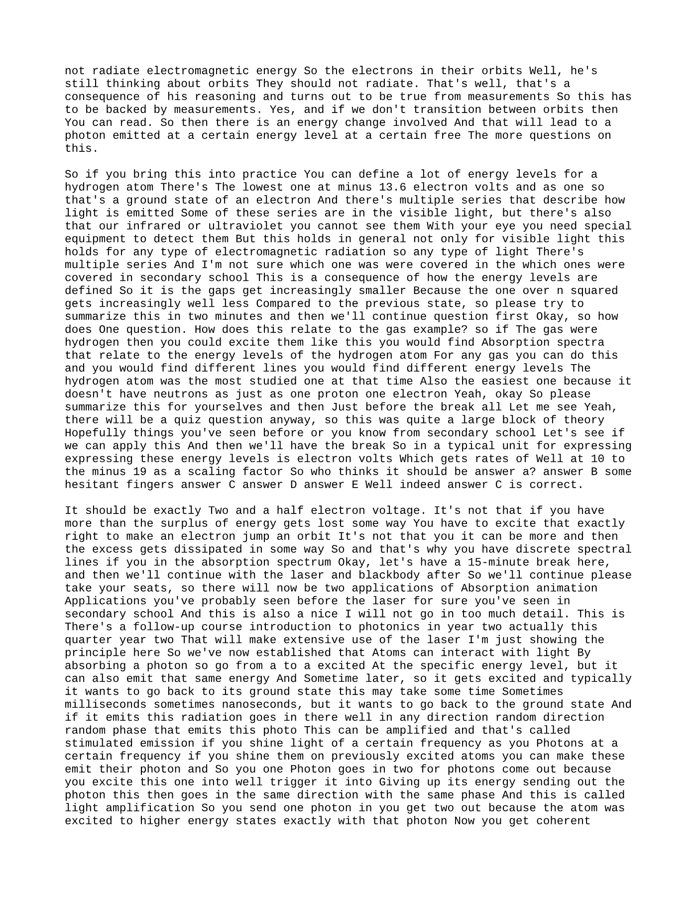
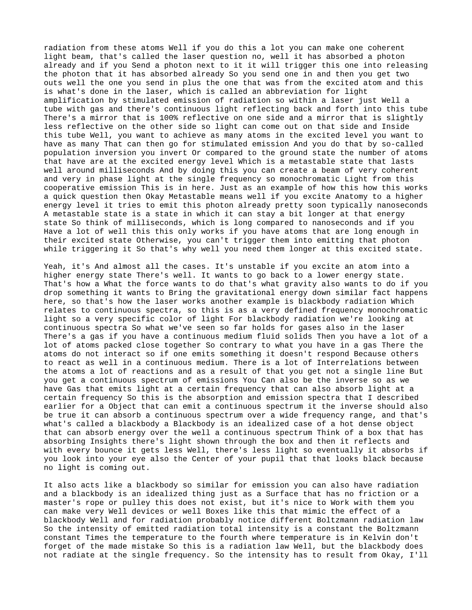
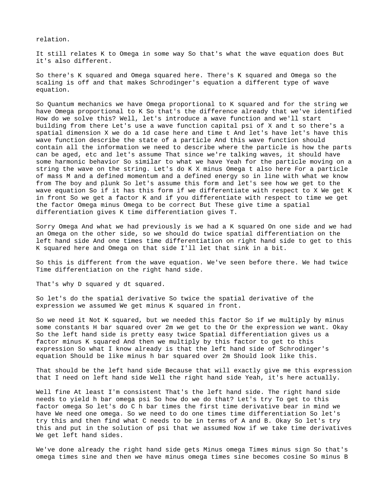
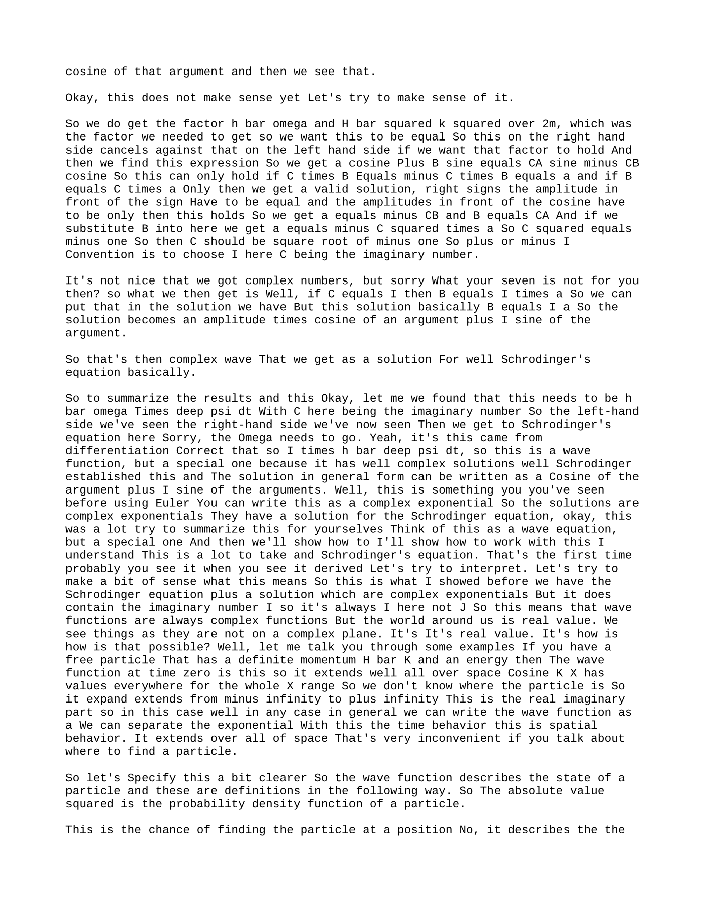
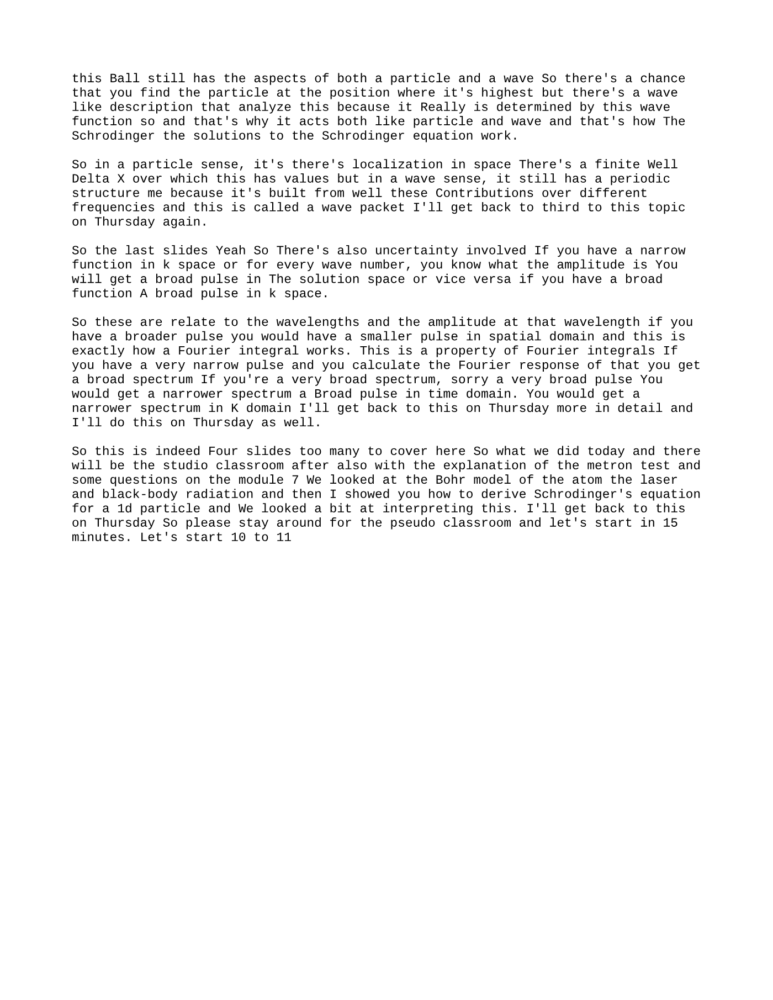

Summary
Good morning Welcome back to the last week of lectures for this course next week on Monday We will have exam practice and a guest lecture by the colleague of ours of mine actually north yours Who’s working on space applications? So I’ll put an announcement on that on campus Things we’ll cover today
Knowledge tree
- No knowledge topics were extracted.
Source material
Lecture Overview
Good morning. Welcome back to the last week of lectures for this course.
Next Week
- Monday: Exam practice
- Guest lecture: A colleague working on space applications
- Announcement: Details will be posted on Campus
- Relevance: Topics covered today are also relevant for that guest lecture
- Space example: There will be a space-related example in today’s material
Today’s Topic
Today is the second lecture on quantum physics: an introduction to quantum physics.
This year’s lecture is different from last year’s because the material has been expanded a bit.
Why the Material Was Expanded
Last year, at the end of Q2, there was a cyber attack. The TU/e had to shut down everything for one week.
As a result:
- Q2 was extended by one week
- Q3 was shortened by one week
- Everything had to fit into seven weeks
- There were effectively six and a half weeks of content plus one lecture for exam practice
This year, there are seven full weeks of content, so the material has been expanded to give more background.
- Pace: We can go through this at a relatively easy pace
Exam-Style Question Recap
This was a multiple-choice question from an exam two years ago.
You should now be able to answer it. Please think about it, and then we will solve it before starting the new content. You may need some back-of-the-envelope calculations or your formula sheet.
Key Physics Relations
From last Thursday:
- Particles with mass can have momentum
- Particles without mass, like photons, can also have momentum
For particles with mass:
[ p = mv ]
Momentum can also be defined as:
[ p = \frac{h}{\lambda} ]
For electrons, both relations apply. For photons, which do not have mass, only:
[ p = \frac{h}{\lambda} ]
holds.
Proton and Electron Wavelength Comparison
We are talking about electrons and protons, so these are particles with mass.
The question asks about them having the same speed.
Write the speed as:
[ v = \frac{h}{m\lambda} ]
Apply this to the proton and the electron.
Since the speeds must be equal:
[ \frac{h}{m_p \lambda_p} = \frac{h}{m_e \lambda_e} ]
Because ( h ) is the same throughout, this gives:
[ m_p \lambda_p = m_e \lambda_e ]
So:
[ \lambda_p = \frac{m_e}{m_p}\lambda_e ]
The mass ratio is:
[ \frac{m_e}{m_p} = \frac{1}{1836} ]
So the correct answer is:
- Answer E
Variation Note
There are many versions of this type of question. For example:
- They may be required to have the same momentum
- Then you get a different ratio
- Momentum also scales with mass
So there are many variations.
Recap of Last Thursday
Topics Covered
- Photoelectric effect
- X-ray production
- Compton scattering
- Wave-particle duality
- Feynman’s interpretation
- Uncertainty principle
These were all effects that could not be explained with the classical view of waves alone, so we need a particle interpretation for light in some cases.
Today, we build on that.
Today’s Scope
This may look like a lot, but today’s lecture mainly covers:
- Chapter 39
- The first section of Chapter 40
A significant amount of time will be spent on how the wave function and the Schrödinger equation are derived.
- This part: should be a bit easier going
- The painful part: mainly comes in the second lecture hour
- Thursday: the remaining material will be wrapped up
de Broglie Wavelength and Planck Relation
de Broglie Relation
The formula shown previously is the de Broglie wavelength.
It holds for any particle with a certain mass and velocity, assuming the speed is well below the speed of light, so relativistic corrections are not needed.
Thus:
- The rest mass is the same as the particle’s mass
- No correction factor is needed
The momentum can be written as:
[ p = \frac{h}{\lambda} = \hbar k ]
where:
[ \hbar = \frac{h}{2\pi} ]
Sometimes you see ( h ), sometimes ( \hbar ). The Schrödinger equation uses ( \hbar ) because of the scaling factor there.
Planck’s Relation
We also had Planck’s relation, which states that:
- Energy is quantized
- Energy is coupled to frequency
For a photon:
[ E = hf ]
So Planck’s constant times the frequency gives the energy of a photon.
This helped Niels Bohr derive his interpretation of the atom, which is an important intermediate step toward the modern wave-function picture.
From Classical Models to the Atom
Why a Particle Interpretation Was Needed
The photoelectric effect showed that light striking a metal can eject an electron if the photon has enough energy to overcome the binding energy of electrons in the lattice.
So:
- Photons behave like particles
- But light also behaves like a wave
You do not use both explanations at the same time.
- Use a wave interpretation for interference and diffraction
- Use a particle interpretation for collisions
Depending on the effect, one description is needed more than the other.
Modern View of the Atom
An atom is:
- The smallest unit of an element that still has all the characteristics of that element
It consists of:
- A small, dense, charged nucleus
- containing protons and neutrons
- A system of electrons around it
Not “shells” in the simplistic sense, but a system describing where the electrons are.
Spectra of Gases
By 1900, it was already known that if you shine light through a gas, useful experiments can be done.
Continuous Light and Gas Interaction
The incoming light source contains all colors, so it has a continuous spectrum. The intensity may vary with wavelength.
When this light passes through a gas:
- The gas absorbs some wavelengths
- The gas can also re-emit light
You then measure the resulting spectrum.
Emission Spectrum
The emission spectrum of a gas has discrete lines.
- Several lines may appear
- They occur at distinct colors
- This acts as a signature of the gas
Absorption Spectrum
The light that continues through the gas is everything except what has been absorbed and re-emitted.
So the transmitted spectrum is basically:
- Input spectrum minus absorbed wavelengths
This gives dark lines in the spectrum where the gas absorbed light.
Experimental Setup
To distinguish the spectral lines more clearly:
- The gas may be heated so the substance is in a gaseous state
- A diffraction grating is often used
- This spreads the spectrum over a screen or detector
This helps measure the wavelengths more accurately.
The idea is to compare:
- Light passing through the gas
- A reference beam
- Emission from the gas
Key Idea
If gas is present in the light path, then ideally:
- Only discrete wavelengths appear in emission
- This forms a line spectrum
Each gas has its own specific signature.
Hydrogen was the most studied gas around 1900-1910, but the principle holds for many gases.
The horizontal axis in such spectra may also be represented as:
- Photon energy
- Or equivalently as ( 1/\lambda )
Thomson’s Atomic Model
At that time, the best atomic model was Thomson’s model.
Main Features
They thought the atom was:
- A very small sphere of radius about:
[ 10^{-10}\ \text{m} ]
which is about 0.1 nm
The sphere was thought to be:
- Generally positively charged
- With electrons sprinkled throughout
Like:
- Nuts in a cake
- Or raisins in a cake
It was a 3D spherical object.
They also knew that:
- All atoms except hydrogen had more than one electron
- They had some idea of total positive and negative charge for different atoms
Why Thomson’s Model Seemed Plausible
With this model, they could try to explain absorption lines:
- Electrons embedded in the positive charge would oscillate around equilibrium positions
- If excited at their natural frequency, they could absorb energy
This is similar to:
- A harmonic oscillator
- A resonant system
So they thought the absorption frequencies should match the natural oscillation frequencies of the electrons.
Rutherford’s Experiment and the Nucleus
Then came Rutherford’s experiment.
He fired alpha particles-the nucleus of a helium atom, consisting of:
- 2 protons
- 2 neutrons
-onto a thin gold foil.
What They Expected
They wanted to confirm Thomson’s model.
If the atom were a spread-out positive charge with embedded electrons, an incoming alpha particle should only be deflected a little.
What They Observed
Most alpha particles passed through the foil, but:
- Some were deflected at large angles
- Some even scattered backward
- Some went back toward the source
This was surprising and could not be explained by Thomson’s model.
Why Thomson’s Model Failed
An alpha particle is positively charged.
If positive charge were spread out through the atom, the alpha particle would only experience a weak distributed interaction, so only small-angle scattering would occur.
But actual backscattering required a much stronger repulsive force concentrated in a much smaller region.
Rutherford’s Conclusion
The only way to explain the observations was that:
- The atom’s positive charge is concentrated in a much smaller volume
- This small region is the nucleus
Because the electric field scales as:
[ \frac{1}{r^2} ]
the field near a tiny concentrated nucleus is much stronger than in a spread-out positive cloud.
This explained the large deflections.
Estimated Nuclear Size
The nuclear size was estimated to be of order:
[ 10^{-14}\ \text{m} ]
This is about four orders of magnitude smaller than Thomson’s atomic size estimate.
The nucleus contains:
- All the positive charge
- Most of the mass of the atom
Problem with Rutherford’s Model
Although Rutherford’s model introduced the nucleus correctly, it still had major problems.
Spectral Lines Still Unexplained
The previous explanation for spectral lines-oscillating embedded electrons-no longer worked.
In Rutherford’s model, electrons were proposed to revolve around the nucleus.
Why This Is a Problem
Orbiting motion requires radial acceleration.
For example, a circular orbit requires centripetal acceleration.
But accelerating charges radiate electromagnetic waves.
So if electrons orbit the nucleus:
- They accelerate continuously
- Therefore they should radiate continuously
- Their energy should decrease
- They should spiral inward
- Their speed would increase
- The radiation frequency would increase
- The wavelength would decrease
But this is not what atoms do.
Atoms do not radiate continuously.
This is the problem that Bohr addressed.
Bohr’s Model of the Atom
Bohr used the new ideas of quantized energy and photons to improve the atomic model.
Known Facts at the Time
They already knew:
- Heated atoms emit light in spectral lines
- These occur at discrete frequencies
- Photons have a defined energy
- Atoms can transition between energy states by emitting or absorbing light
If an atom goes from an excited state to a lower state, the emitted frequency is related to the energy difference.
Likewise, if light with the right energy shines on an atom, it can raise the atom to a higher energy state.
Bohr’s Key Postulates
Bohr proposed that:
- The atom can only have certain energy levels
- Energy is quantized
- Each atom has a specific set of allowed energy levels
- An excited atom can transition between these levels by emitting or absorbing a photon
Angular Momentum Quantization
Consider an electron of mass ( m ) moving with velocity ( v ).
It has linear momentum:
[ p = mv ]
For rotational motion, define angular momentum:
[ L = \mathbf{r} \times \mathbf{p} ]
For circular motion, its magnitude is:
[ L = mvr ]
Bohr postulated this for hydrogen:
- Electrons can move in allowed orbits only if the orbit length contains an integer number of wavelengths
- The electron wavelength must fit around the orbit
This implies:
[ L = n\hbar ]
where:
[ n = 1,2,3,\dots ]
This means the orbit circumference must satisfy:
[ 2\pi r = n\lambda ]
So only discrete orbits are allowed.
These are quantized.
No Radiation in Allowed Orbits
Bohr’s next postulate was that if an electron is in an allowed orbit, it does not radiate electromagnetic energy.
So:
- The orbit is stable
- The electron does not spiral inward
- Radiation occurs only when the electron transitions between allowed orbits
This contradicts classical expectations, but it matches experiment.
Bohr Model Calculations
Force Balance in a Stable Orbit
The electron and proton attract each other via the Coulomb force.
The magnitude is:
[ \frac{e^2}{4\pi\varepsilon_0 r^2} ]
This must equal the centripetal force:
[ m\frac{v^2}{r} ]
So:
[ \frac{e^2}{4\pi\varepsilon_0 r^2} = m\frac{v^2}{r} ]
This combines ideas from:
- Module 2
- Module 7
Using Quantized Angular Momentum
From:
[ mvr = n\hbar ]
we get:
[ mv = \frac{n\hbar}{r} ]
Using this, one can solve for:
- The allowed velocity
- The allowed radius
Bohr Radius
The radius becomes:
[ r_n = n^2 a_0 ]
where ( a_0 ) is the Bohr radius:
[ a_0 = 5.3 \times 10^{-11}\ \text{m} ]
This is a good prediction for hydrogen.
Energy Levels and Transitions
Third Postulate
Electrons can transfer only between allowed orbits.
- From a higher orbit to a lower orbit: the atom emits a photon
- From a lower orbit to a higher orbit: the atom absorbs a photon
The energy change is:
[ hf = E_i - E_f ]
or equivalently:
[ E = hf = \frac{hc}{\lambda} ]
Kinetic and Potential Energy
The electron has:
- Kinetic energy:
[ K = \frac{1}{2}mv^2 ]
- Potential energy from the electric field
The total energy is:
[ E = K + U ]
After simplification, this leads to the familiar hydrogen energy levels.
Rydberg Constant and Principal Quantum Number
The orbit number ( n ) is called the principal quantum number.
After simplifying the constants, we introduce the Rydberg constant.
Then transitions between levels give the Rydberg formula:
[ \frac{1}{\lambda} = R\left(\frac{1}{n_L^2} - \frac{1}{n_U^2}\right) ]
where:
- ( n_L ): lower orbit
- ( n_U ): upper orbit
Since ( n_U > n_L ), the result is positive.
This is probably the formula you saw in secondary school.
Clarification on Radiation in Bohr’s Model
A question came up: if an electron is orbiting, doesn’t it accelerate, and therefore radiate?
According to classical mechanics, yes. But Bohr postulated that in these allowed orbits:
- Electrons do not radiate
This was motivated by experiment:
- Atoms do not continuously radiate when simply sitting in stable states
- Radiation occurs only during transitions between orbits
This is one of the key departures from classical reasoning.
Hydrogen Energy Levels and Spectral Series
For hydrogen, you can define many energy levels.
Ground State
The lowest energy level is:
[ -13.6\ \text{eV} ]
This is the ground state.
Spectral Series
There are multiple series of spectral lines:
- Some are in the visible range
- Some are in the infrared
- Some are in the ultraviolet
So this applies to all electromagnetic radiation, not just visible light.
The gaps between energy levels become smaller for larger ( n ), because of the ( 1/n^2 ) dependence.
Relation to the Gas Example
If the gas were hydrogen, then excitation would produce absorption and emission spectra that match the hydrogen energy levels.
For other gases:
- You also get discrete spectral lines
- But the energy levels are different
Hydrogen was especially important because:
- It was the most studied atom
- It is the simplest one
- It has one proton and one electron
Quiz Question on Excitation Energy
A typical unit for these energy levels is the electron volt (eV).
An electron volt corresponds to a scale of about:
[ 10^{-19} ]
in SI units.
The correct answer to the quiz was:
- Answer C
It should be exactly 2.5 eV.
The key point is:
- The electron must absorb exactly the required energy to jump to the higher orbit
- It is not the case that extra surplus energy is simply lost somehow in this process
That exactness is why we see discrete spectral lines in absorption spectra.
Break and Second Part of Lecture
After this, there was a 15-minute break.
Then the lecture continued with two applications of absorption and emission:
- The laser
- Blackbody radiation
Laser
This is an application you have probably seen before, especially in secondary school.
There is also a follow-up course, Introduction to Photonics in year two, that uses lasers extensively.
Here only the basic principle is discussed.
Basic Idea
Atoms can interact with light by:
- Absorbing a photon, going to an excited state
- Emitting a photon, returning to a lower state
An atom in an excited state typically wants to return to its ground state after some time.
This may take:
- Nanoseconds
- Or sometimes milliseconds
Stimulated Emission
If you shine photons of the right frequency onto previously excited atoms, you can trigger them to emit their stored photon.
Then:
- One photon goes in
- Two photons come out
The emitted photon has:
- The same direction
- The same phase
- The same frequency
This is called stimulated emission.
Laser Meaning
LASER stands for:
- Light Amplification by Stimulated Emission of Radiation
How a Laser Works
Inside a laser:
- There is typically a tube with gas
- Light reflects back and forth
- One mirror is 100% reflective
- The other is partially reflective, so some light can leave as the output beam
To make the process work efficiently, you want many atoms in the excited state.
This is done by creating a:
- Population inversion
That means there are more atoms in the excited state than in the lower state.
The excited state used is usually metastable, meaning the atom remains there relatively long.
Metastable State
A metastable state is an excited state that lasts longer than usual.
- Typical excited states may decay in nanoseconds
- A metastable state may last milliseconds
This longer lifetime is important because it allows enough time for stimulated emission to occur.
Result
The laser produces:
- A very coherent
- Very in-phase
- Monochromatic beam of light
Blackbody Radiation
Blackbody radiation relates to continuous spectra, unlike the discrete lines seen in gases.
Discrete vs Continuous Media
For gases:
- Atoms are relatively far apart
- They mostly act independently
- Emission occurs in discrete lines
For solids, liquids, or dense media:
- Atoms are packed closely together
- There are many interactions between them
- The result is a continuous spectrum
What Is a Blackbody?
A blackbody is an idealized hot, dense object that can:
- Absorb radiation over a continuous range of frequencies
- Emit radiation over a continuous range of frequencies
An ideal blackbody can be imagined as:
- A box with absorbing interior walls
- Light enters, reflects many times, and is eventually absorbed
A familiar analogy is the center of the eye’s pupil, which looks black because almost no light comes out.
A blackbody is an idealization, like:
- A frictionless surface
- A massless rope
- An ideal pulley
It does not exist perfectly in reality, but real systems can approximate it well.
Stefan-Boltzmann Law
The total emitted intensity of blackbody radiation is given by the Stefan-Boltzmann law:
[ I = \sigma T^4 ]
where:
- ( \sigma ) is the Stefan-Boltzmann constant
- ( T ) is the temperature in Kelvin
Do not forget to use Kelvin.
Example: Sunspots
Sunspots are not truly black. They just emit much less radiation than the surrounding surface.
For example:
- Cooler sunspot temperature: 4000 K
- Surrounding solar surface: 5800 K
The intensity ratio is:
[ \left(\frac{4000}{5800}\right)^4 \approx 0.23 ]
So sunspots radiate only about 23% as much as the hotter surrounding surface.
That is why they appear darker.
These cooler spots are related to:
- Vortices in the Sun
- Magnetic fields
Spectral Emittance and Wien’s Law
The Stefan-Boltzmann law gives the total radiated intensity.
But blackbody radiation is spread across a continuous spectrum, so we also define the spectral emittance:
- Intensity per wavelength
- Intensity per color
These curves:
- Start near zero at low wavelength
- Rise to a maximum
- Then fall off again
Wien’s Displacement Law
The wavelength of maximum emission satisfies:
[ \lambda_{\text{max}} T = \text{constant} ]
Again, temperature must be in Kelvin.
This tells you where the peak of the blackbody curve lies.
Total Intensity as Area Under the Curve
The total intensity comes from integrating the spectral curve over all wavelengths.
Because the curve goes to zero at both ends, the integral is finite.
That integral gives the Stefan-Boltzmann law:
[ \sigma T^4 ]
Ultraviolet Catastrophe and Planck’s Solution
Classical theory tried to explain blackbody radiation using oscillators that absorb and emit light.
This worked reasonably well at large wavelengths, but failed badly at small wavelengths.
Classical Failure
The classical prediction, associated with Rayleigh, behaved like:
[ \frac{1}{\lambda^4} ]
So as ( \lambda \to 0 ), the predicted intensity would explode instead of going to zero.
This became known as the:
- Ultraviolet catastrophe
Planck’s Solution
Planck solved this by proposing that the energy of the oscillators is quantized.
The energy could only occur in discrete amounts:
[ E = hf ]
So the allowed energy values are integer multiples of a basic quantum:
[ hf ]
This allowed him to derive a formula that correctly described blackbody radiation.
Later, experiments confirmed that this was correct.
This was the starting point of quantum physics.
Star Color and Temperature
An important application, also relevant to space, is that the color of stars tells us something about their temperature.
Visible-Spectrum Interpretation
Restricting ourselves to the visible spectrum:
- Lower-temperature stars appear more red
- Higher-temperature stars appear more blue or violet
A star that emits across the visible range in a balanced way may appear white.
So roughly:
- Red → White → Blue as temperature increases
Transition to Schrödinger’s Equation
The lecture then moves to the most difficult part of the day:
- Schrödinger’s equation
The rest of the lecture could not fully be covered today, and a few slides were postponed to Thursday.
From Bohr to Schrödinger
Starting Point
From Feynman’s interpretation:
- Light behaves like a particle
- Light behaves like a wave
- Electrons also behave like particles and waves
In reality, it is best to accept that these objects are neither classical particles nor classical waves in the ordinary sense.
One might call them particle-waves, though that is only a rough label.
The important thing is that many microscopic objects behave in a similar quantum way:
- Photons
- Electrons
- Protons
- Neutrons
So once we learn how to work with this description, we can apply it to many atomic particles.
Recap of Bohr
Bohr said that:
- Bound particles have quantized energy levels
- Electrons in allowed orbits do not radiate
- Radiation occurs only when they transition between orbits
But Bohr’s model is only semi-classical:
- It still uses Newtonian mechanics
- It works well for hydrogen
- It does not work well for more complicated atoms
So we need something more general.
That is where the wave description and Schrödinger’s equation come in.
Probability Amplitudes
Feynman used the notation ( \phi ), while Schrödinger uses ( \psi ).
These are just notation differences.
Key Idea
There is:
- A probability amplitude
- And a probability
The probability is related to the square of the amplitude.
If an event can happen in multiple ways, then you combine the amplitudes appropriately and then determine the probability.
This had already been discussed previously, so the lecture did not go into that in detail again.
Building Schrödinger’s Equation
We start in:
- 1 spatial dimension
- Time
We want something wave-like, so it should relate to the wave equation seen earlier in Module 5.
We also know:
- Planck’s law relates energy and frequency
- de Broglie’s hypothesis relates momentum and wavelength
These must be satisfied.
Classical Wave Equation Reminder
The standard wave equation is:
[ \frac{\partial^2 y}{\partial x^2} = \frac{1}{v^2}\frac{\partial^2 y}{\partial t^2} ]
Its solutions are traveling waves like:
[ y(x,t) = A\cos(kx-\omega t) + B\sin(kx-\omega t) ]
with:
- Wave number: ( k )
- Angular frequency: ( \omega )
- and relations such as:
[ k = \frac{\omega}{v} ]
and
[ \lambda = \frac{v}{f} ]
This gives the classical dispersion relation:
[ k^2 = \frac{\omega^2}{v^2} ]
Free Quantum Particle
Now consider a free particle:
- No forces act on it
- So its potential energy is constant
- For now, take the potential energy as zero
Then its energy is just its kinetic energy:
[ E = \frac{1}{2}mv^2 = \frac{p^2}{2m} ]
But from Planck’s relation, the energy is also:
[ E = hf = \hbar \omega ]
And from de Broglie:
[ p = \frac{h}{\lambda} = \hbar k ]
So equating kinetic energy and Planck energy gives:
[ \frac{(\hbar k)^2}{2m} = \hbar \omega ]
or:
[ \frac{\hbar k^2}{2m} = \omega ]
This is the quantum-mechanical dispersion relation.
Important Difference from Classical Waves
For classical waves:
- ( \omega \propto k )
For quantum free particles:
- ( \omega \propto k^2 )
That already shows that the Schrödinger equation is a different kind of wave equation.
The Wave Function
We now introduce a wave function:
[ \Psi(x,t) ]
This wave function should describe the state of a particle.
Assume it has harmonic form, analogous to wave motion:
[ \Psi(x,t) ]
with dependence like:
[ kx - \omega t ]
for a particle of mass ( m ), definite momentum, and definite energy.
Differentiating with respect to:
- space gives a factor of ( k )
- time gives a factor of ( \omega )
Because the dispersion relation involves:
- ( k^2 ) on one side
- ( \omega ) on the other
we expect:
- second derivative in space
- first derivative in time
This is different from the ordinary wave equation, which has a second time derivative.
Resulting Structure
The left-hand side must involve something like:
[ -\frac{\hbar^2}{2m}\frac{\partial^2 \Psi}{\partial x^2} ]
The right-hand side must involve:
[ i\hbar \frac{\partial \Psi}{\partial t} ]
where the factor ( i ) appears when matching the trigonometric terms consistently.
This leads to the Schrödinger equation for a free particle in 1D:
[ -\frac{\hbar^2}{2m}\frac{\partial^2 \Psi}{\partial x^2}
i\hbar \frac{\partial \Psi}{\partial t} ]
Complex Nature of the Wave Function
The derivation shows that the wave function must be complex.
Its solution can be written in a form like:
[ \cos(\text{argument}) + i\sin(\text{argument}) ]
Using Euler’s formula, this is a complex exponential.
So wave functions are generally complex-valued.
A note on notation:
- Physics uses ( i ) rather than ( j ) for the imaginary unit
Physical Meaning of the Wave Function
This raises a question:
- If the wave function is complex, how do we get real physical predictions?
Probability Density
The answer is that the physically meaningful quantity is:
[ |\Psi|^2 ]
The absolute value squared of the wave function gives the probability density.
That is the density for finding the particle at a given position.
If you want the probability of finding the particle between ( x ) and ( x + \Delta x ), then you integrate the probability density over that interval.
Because ( \Psi ) is complex:
[ |\Psi|^2 = (\text{real part})^2 + (\text{imaginary part})^2 ]
Probability and Normalization
Basic Probability Facts
A probability always lies between:
- 0: impossible
- 1: certain
The probability of finding the particle somewhere less than ( x_1 ) is obtained by integrating the probability density from:
[ -\infty \text{ to } x_1 ]
The probability of finding the particle somewhere in all space must be:
[ 1 ]
So:
[ \int_{-\infty}^{\infty} |\Psi|^2,dx = 1 ]
This is called normalization.
Issue with a Pure Traveling Wave
A single infinite sine or cosine wave extends from:
[ -\infty \text{ to } \infty ]
So it cannot be normalized properly.
That means a pure traveling wave is not a realistic description of a localized particle.
Expectation Value and Uncertainty
The expected position of the particle is found from:
[ \langle x \rangle ]
using the probability density.
There is also an uncertainty in position related to the variance.
The standard deviation is the square root of that variance.
The key point is:
- The wave function allows us to calculate the location statistics of the particle
Wave Packets
A single traveling wave is not localized, but a sum of traveling waves can produce a wave packet.
Why Wave Packets Matter
A wave packet:
- Has a finite extent in space
- Is approximately zero outside a certain range
- Gives a localized region where the particle is likely to be found
It is built as a superposition of many waves with different wave numbers.
This lets us define:
- An average wave number
- An average wavelength
So the particle has both:
- A localized particle-like aspect
- A wave-like structure
This is why quantum objects behave like both particles and waves.
Probability Density of a Wave Packet
The probability density for a wave packet has a finite width ( \Delta x ).
- It is nearly zero outside a certain region
- It is highest near the center of the packet
So the particle is most likely to be found where the probability density is largest.
Fourier View and Uncertainty
To construct a wave packet, one combines waves with different wave numbers.
This works like a Fourier series or Fourier integral.
Key Fourier Property
- A narrow distribution in ( k )-space gives a broad pulse in position space
- A broad distribution in ( k )-space gives a narrow pulse in position space
This is the mathematical origin of the uncertainty relationship between spatial localization and wavelength content.
More detail on this was postponed to Thursday.
End of Lecture Summary
Today’s lecture covered:
- The Bohr model of the atom
- The laser
- Blackbody radiation
- Derivation of Schrödinger’s equation for a 1D particle
- Initial interpretation of the wave function
There was also a reminder that:
- A studio classroom followed afterward
- It included explanation of the midterm test
- And some questions on Module 7
Finally:
- Please stay around for the pseudo classroom
- Start time: 10:50
Source snapshots












